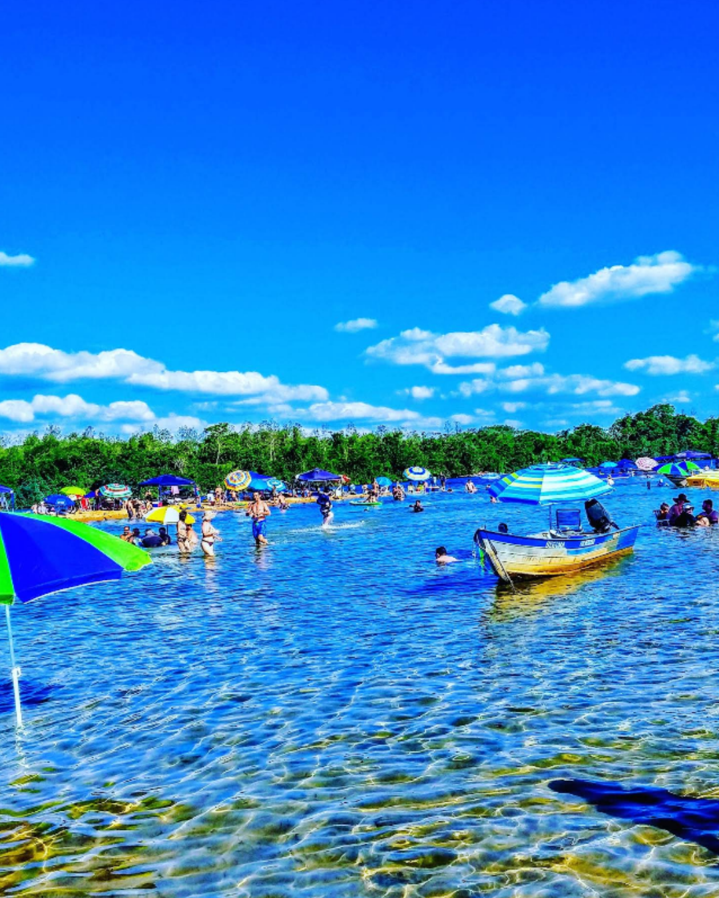
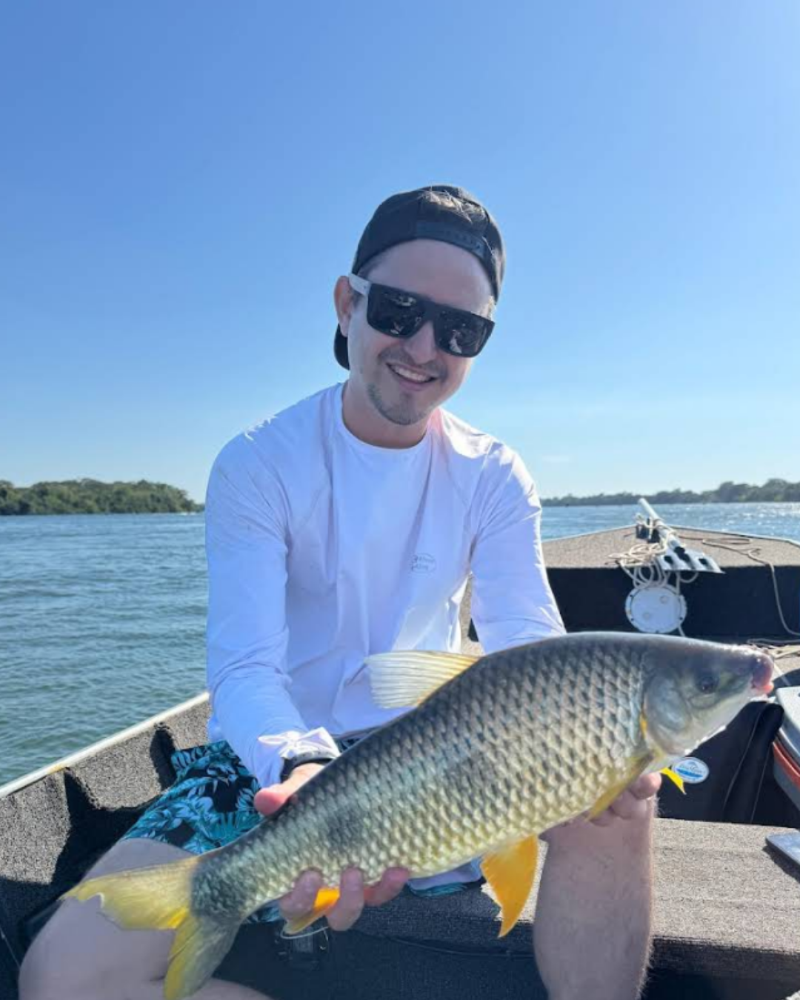

Sobre Curitiba
Curitiba, a capital do Paraná, é uma cidade moderna e organizada. Seu planejamento urbano é renomado, especialmente o sistema de transporte público (BRT - Bus Rapid Transit), que inspirou outras cidades ao redor do mundo. A cidade tem um clima temperado, com invernos frios e verões mais amenos, o que a diferencia de muitas capitais brasileiras. A cultura curitibana é marcada pela forte presença de imigrantes europeus, como alemães, italianos, poloneses e ucranianos. Essa diversidade é visível na arquitetura, na culinária e nas tradições da cidade. Curitiba é uma cidade notável por sua organização, planejamento urbano, e, principalmente, pela grande quantidade de áreas verdes, que se tornaram seus principais cartões-postais. Conhecida como a "capital ecológica", ela combina modernidade com a preservação da natureza e a homenagem a diversas culturas de imigrantes. Principais Pontos Turísticos de Curitiba A maioria das atrações da cidade pode ser visitada de forma prática através da Linha Turismo, um ônibus de dois andares que percorre os principais pontos. Muitos deles são gratuitos, o que torna a cidade ainda mais acessível. Parques e Áreas Verdes Jardim Botânico de Curitiba: O ponto turístico mais famoso. Com sua icônica estufa de vidro em estilo art nouveau, inspirada no Palácio de Cristal de Londres, e seus jardins de estilo francês, é um lugar perfeito para fotos e para relaxar. Parque Barigui: Um dos maiores e mais frequentados da cidade. É famoso por sua enorme área verde, pistas de caminhada, ciclovias e, claro, pelas capivaras, que vivem livremente no local e se tornaram um símbolo de Curitiba. Parque Tanguá: Construído em uma antiga pedreira, o parque oferece um mirante com vista espetacular para uma cachoeira e um lago artificial. É um dos melhores lugares para assistir ao pôr do sol na cidade. Bosque do Papa (ou Memorial Polonês): Um parque tranquilo que celebra a imigração polonesa para o Paraná, com casinhas de madeira que retratam a arquitetura típica e um memorial à visita do Papa João Paulo II em 1980. Museus e Cultura Museu Oscar Niemeyer (MON): Conhecido como "Museu do Olho", por sua arquitetura única e futurista, projetada por Oscar Niemeyer. É um dos maiores e mais importantes museus de arte da América Latina. Ópera de Arame: Um teatro construído com estrutura tubular de aço e teto transparente, localizado em um local de natureza exuberante, sobre uma pedreira desativada. A arquitetura por si só já é um espetáculo. Bosque Alemão: Um espaço que homenageia a cultura e os contos de fadas alemães, com uma trilha que reproduz a história de João e Maria e uma torre que oferece uma vista panorâmica da cidade. Outros Locais Imperdíveis Setor Histórico e Largo da Ordem: A parte mais antiga da cidade, com ruas de paralelepípedos e casarões históricos. Aos domingos, o local ganha vida com a Feirinha do Largo da Ordem, uma feira de artesanato, comidas e apresentações artísticas. Santa Felicidade: Bairro tradicionalmente italiano, conhecido por seus restaurantes que servem rodízio de massas e vinhos. É um ótimo lugar para uma experiência gastronômica completa. Rua XV de Novembro (Rua das Flores): A primeira grande rua exclusiva para pedestres do Brasil, cheia de lojas, cafés, teatros e artistas de rua. É um ponto de encontro e um ótimo local para passear. Mercado Municipal de Curitiba: O lugar ideal para provar as delícias da culinária local e comprar produtos frescos e exóticos. Ótimo para quem gosta de gastronomia.
Diária para 2 adultos (quarto casal/júnior): R$322 Preço por pessoa pode ser reduzido em quartos compartilhados. Estrutura: piscina externa, restaurante, ar condicionado, Wi‑Fi, estacionamento gratuito.
Coco Bambu Curitiba, conhecido por seus pratos de frutos do mar. Maneko's,um clássico com comida caseira. Batel Grill Churrascaria, para os amantes de carne. Outras opções populares são o Afonso's, The Ox Room Steakhouse, e o Zapata Mexican Bar.
Gastronomia e Vida Noturna, Experiências Culturais e de Lazer,Atividades ao Ar Livre e Esportes. Clique em "Ver mais" para detalhes.

Para receber um reembolso integral, você deve cancelar até 25 dias antes do início da experiência.